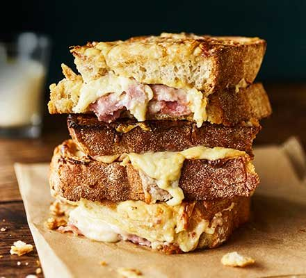

Croque Monsieur

The perfect croque monsieur
Master the croque monsieur with soft sourdough, gruyère, smoked ham and creamy mustard mayo.
You'll relish every mouthful of this brunch classic.
Ingredients
- 4 slices from a white sourdough or crusty white
- 20g butter, melted
- 1 tsp Dijon mustard
- 100g grated gruyère
- 4 thin slices of great smoked ham
- 125ml milk
- 125ml cream
- 1 garlic clove, crushed
- 2 bay leaves
- 1 small onion, chopped
- 20g butter
- 20g plain flour
- 1 heaped tsp Dijon mustard
- fresh nutmeg, grated
- 1 tsp Dijon mustard
- 1 tbsp mayonnaise
Method
- First, make a perfect béchamel sauce. Put the milk, cream, garlic,
bay leaves and onion in a small pan over a medium heat and stir together.
Heat until nearly boiling,
then turn the heat off and leave for 10 mins to infuse.
Pass the liquid through a sieve and discard the bay and onion.
- Melt the butter with the flour in another pan and cook over a gentle heat until it smells biscuity.
Gradually whisk in the warm milk and bring to a gentle boil, stirring regularly, then add the Dijon mustard,
a little grating of fresh nutmeg and some seasoning.
It should be a lovely thick creamy sauce with a deep flavour.
- Brush the slices of bread with melted butter. Place them on a baking tray and toast one side under a grill,
buttered-side up, until golden. Take them out and heat oven to 220C/200C fan/gas 7.
- Turn the bread over and spread each slice with a thin layer of Dijon, followed by a layer of the béchamel.
Cover the sauce with grated gruyère, and then a slice of ham. Form the slices into two sandwiches,
spread a thin layer of the sauce over the top slice and sprinkle more gruyère on top.
Put the sandwiches in the oven and bake for 10-15 mins or until golden.
Mix the mustard and mayo together and serve alongside.